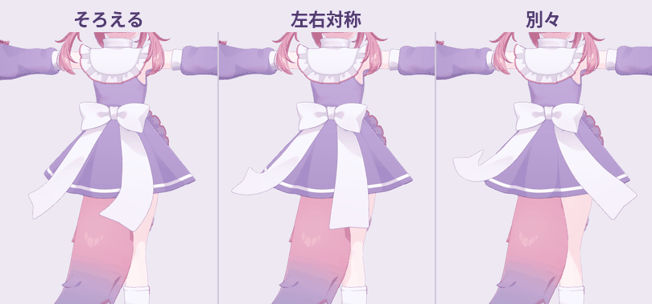
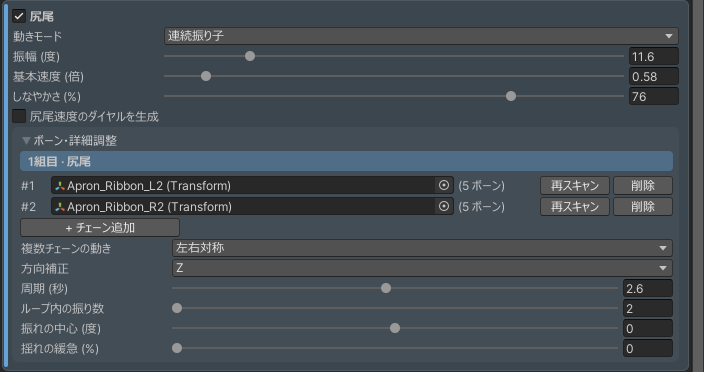
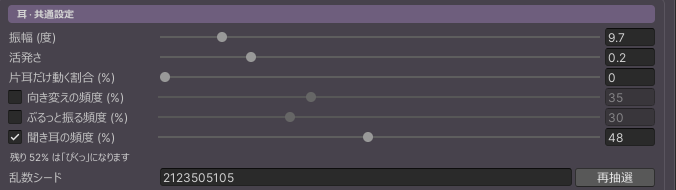
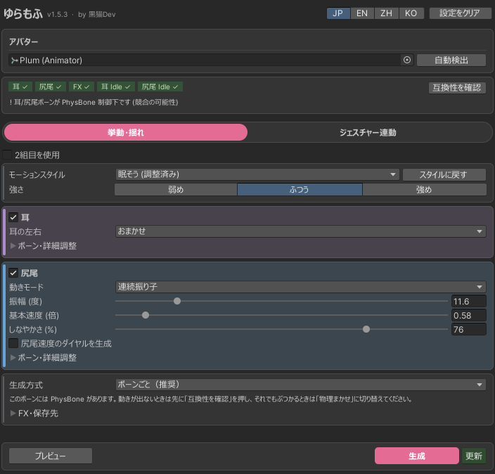
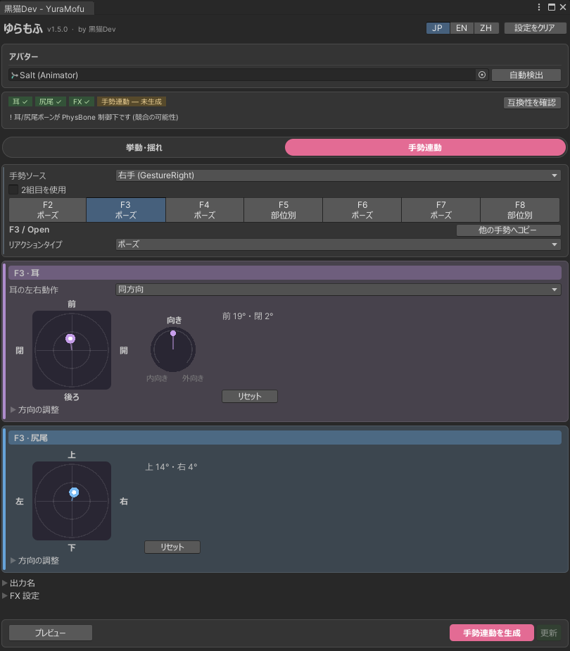
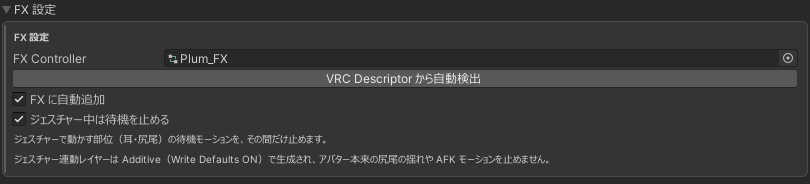
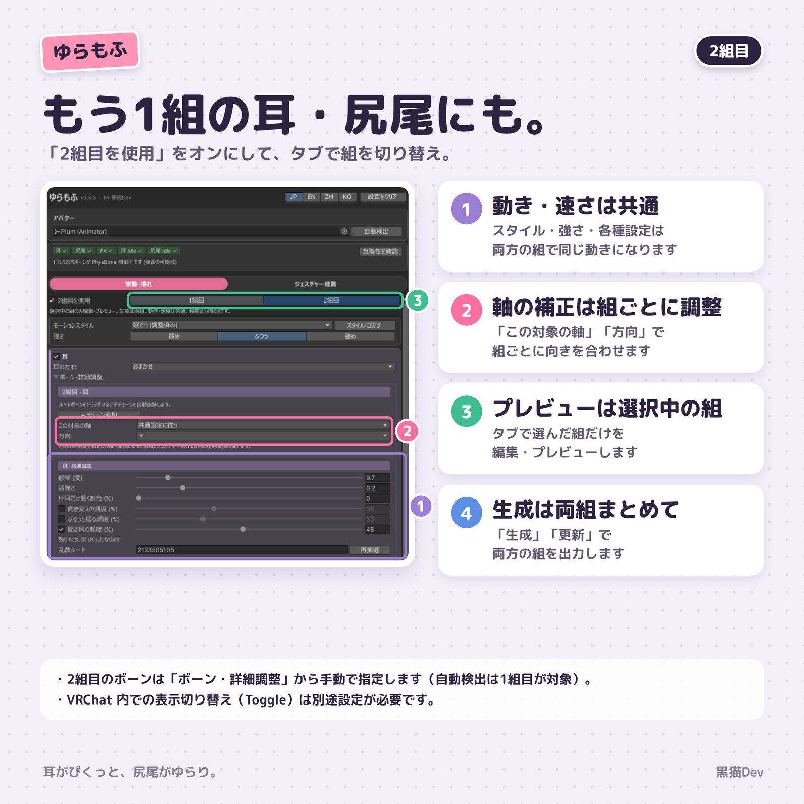

★v1.5.3 新功能
尾巴現在可以加上第 2 條以後的骨鏈，雙馬尾、圍裙緞帶等尾巴以外會擺動的部位也能一起動。

把圍裙左右兩條緞帶當成一組尾巴來動的例子（一致／左右對稱／各自擺動，畫面為日文介面）

新增尾巴骨鏈
在「骨骼與詳細調整」按「+ 新增骨鏈」加入第 2 條以後的骨鏈。強度、速度等設定所有骨鏈共用。有 2 條以上時，用「多條骨鏈的動作」選擇一致（往同一個方向擺）／左右對稱（和第 1 條鏡像）／各自擺動（各自的節奏）。

耳朵「傾聽」
偶爾把耳朵豎起，停一下再放鬆，像在專心聽某個聲音。和轉向、甩耳一樣，用行首的勾選框和「傾聽頻率（%）」設定。開啟的動作合計最多 100%，其餘為抖動。
- 選好風格後手動改了數值，風格旁會顯示「已調整」，按「恢復風格」可以回到風格的數值。改選其他風格時，會先確認是否覆蓋調整過的內容。
- 每種風格現在都會使用自己的節奏，「活躍度」以風格的節奏為基準調快或調慢。「緊張」改成耳朵豎起、左右輪流往外看的動作。
- 指定角色時會自動偵測骨骼。
- 生成、更新前的確認畫面也會顯示 FaceEmo 的 WriteDefaults 提醒。
- 解除安裝前會先列出要移除的內容並確認，也會一併移除尾巴速度轉盤（FX 參數、選單項目）和手勢中暫停待機用的 Animation Clip。
要套用到既有的輸出，請在更新工具後按「更新」。
v1.5.2 新功能
新增和 FaceEmo 併用時的提醒，並讓尾巴的動作更自然。
- FaceEmo 以「WriteDefaults オフ（表情優先）」套用時，工具畫面會顯示警告。這會讓耳朵和尾巴陷進去或扭轉。看到警告時，請在 FaceEmo 改選「WriteDefaults 統一（ギミック優先）」，再按一次「アバターに適用」。
- 如果 FX 本身有 WriteDefaults 關閉的狀態、只改 FaceEmo 的設定也無法解決，也會顯示說明。
- 尾巴動作設為「偶爾」時，擺動結束不會突然停住，而是越擺越小、自然停下。
- 修正在沒有設定 Expressions Menu・Parameters（維持 VRChat 預設）的角色加上速度轉盤時，VRCEmote 和表情用參數會消失的問題。
尾巴動作和速度轉盤的修正，更新工具後按「更新」就會套用到既有的輸出。
01開始使用
環境需求：Unity 2022.3 LTS 以上（Windows 版 Unity Editor）。自動加入 FX、手勢連動與尾巴速度轉盤需要 VRChat SDK3 Avatars；沒有 SDK 也能生成基本的 Animation Clip。
匯入並開啟
把 unitypackage 匯入專案，開啟選單 黒猫Dev → YuraMofu (ゆらもふ) → Open Window。建議先備份專案。
指定角色並「自動偵測」
把場景中的角色放進「角色」欄，按「自動偵測」。狀態列的耳朵、尾巴、FX 都打勾就準備好了。請確認偵測結果，有錯就到「骨骼與詳細調整」重新指定。
選擇風格與強度
在「待機擺動」分頁選擇動作風格和強度，再分別調整耳朵與尾巴。
預覽確認
按「預覽」在場景中確認動作。預覽中的修改，生成前不會寫入資產或 FX。
生成／更新
第一次按「生成」，之後要修改已生成的動作按「更新」。執行前會先列出要寫入的檔案和要新增或取代的圖層。

「待機擺動」分頁（畫面為日文介面）
02待機擺動
動作風格與強度
強度有「弱／普通／強」。選擇風格時，耳朵和尾巴的細部設定會套用該風格的數值。手動改了數值時會顯示「已調整」，按「恢復風格」可以回到風格的數值。隨性是在長時間靜止之間，夾雜單耳短促的抖動，以及中心偏向一側、快慢不一的尾巴擺動。
耳朵
- 左右耳
- 自動／同步／非同步。同步時可用「單耳動作比例」設定只有一邊耳朵抖動的機率。
- 動作種類
- 預設只有抖動，可以再加上「耳朵轉向」（慢慢朝外轉後停住）、「甩耳」（像甩掉水一樣甩動）和「傾聽」（豎起耳朵停一下）。用行首的勾選框開關，「頻率（%）」決定比例。開啟的動作合計最多 100%，其餘為抖動。
尾巴
- 骨骼
- 用「+ 新增骨鏈」加入第 2 條以後的骨鏈（雙馬尾、緞帶等），在「多條骨鏈的動作」選擇一致／左右對稱／各自擺動。
- 動作
- 連續擺動／間歇擺動。
- 幅度與基本速度
- 1 倍是一個週期 1.5 秒。
- 柔軟度（%）
- 數值越高，根部越穩，擺動像波一樣傳到尾端。0 為原本的動作。
- 擺動中心與擺動快慢變化
- 往某一側偏著擺／讓每一次擺動的速度有變化（詳細調整）。
- 尾巴速度轉盤
- 開啟「生成尾巴速度轉盤」後，可以在 VRChat 裡用轉盤調整待機尾巴的速度，轉到 0% 時尾巴會回到原位停下。耳朵和手勢連動的速度不受影響。
生成方式
- 逐骨生成（建議）
- 在整條骨鏈的每根骨骼寫入關鍵影格，適合沒有 PhysBone 的耳朵與尾巴。
- 交給物理（備案）
- 只驅動根部，其餘擺動交給 PhysBone。關鍵影格少、動作更柔和。
動作方向不對時，到「骨骼與詳細調整」用方向修正調整軸向。大多數角色用預設值就可以。
03手勢連動（Gesture Link・產品版）
依「左右手（GestureLeft / GestureRight）→ F2～F8 → 反應類型 → 耳朵與尾巴」的順序設定。

「手勢連動」分頁（F3 / Open，畫面為日文介面）
反應類型
- 無
- 這個手勢不會驅動耳朵或尾巴。
- 姿勢
- 讓耳朵／尾巴倒向 2D 盤設定的方向。Fist 會依扳機按壓程度在 0～100% 間變化，其他手勢一比出來就是 100%。
- 連續動作
- 手勢持續時，循環播放所選風格的耳朵或尾巴動作。
- 部位分配
- 分別替耳朵與尾巴指定「無／姿勢／動作」。
用 2D 盤決定方向
耳朵：2D 盤決定倒的方向，轉盤決定朝內／朝外尾巴：2D 盤決定倒的方向
- 離中心越遠，倒得越多。左右是以角色本身看出去的方向。
- 2D 盤與轉盤用拖曳調整，點兩下回到中心（0）。
- 耳朵選「同方向」時兩耳左右對稱做同樣動作，「反方向」則另一隻耳朵做相反動作；「只有左耳」「只有右耳」只動一隻耳朵，「左右分開」則每隻耳朵各用一個 2D 盤決定方向。
- 想直接輸入 XYZ 時打開「方向調整」。輸入 XYZ 後，在你再次拖動 2D 盤之前都會使用 XYZ 的值。
- 選取 Fist 時，可以用「預覽姿勢進度 (%)」確認不同按壓程度的樣子。
手勢中停止待機動作
位於「FX 設定」中（預設開啟）。手勢動到的部位，在手勢期間暫停待機動作。關閉時，手勢的姿勢／動作會疊加在待機動作上。不論先生成待機或手勢連動，都會依 FX 內的圖層自動設定。

FX 設定（F2 / Fist，畫面為日文介面）
「複製到其他手勢」可以把目前手勢的設定複製到另一個手勢或全部手勢。顯示名稱不會被複製。
04第二組耳朵與尾巴
在各分頁上方開啟「啟用第二組」，就能切換第一組／第二組來編輯。動作與速度共用，只有軸向修正分組調整。生成與更新會輸出所有啟用的組。

第二組耳朵與尾巴
第二組的骨骼請手動指定（自動偵測只針對第一組）。這不是讓兩組各自用不同動作、速度的功能。
05生成、更新與 FX Controller
- 預覽
- 在 Unity Editor 中確認動作。生成或更新前，修改不會寫入資產或 FX。
- 生成
- 建立新的 Animation Clip 與ゆらもふ用的 FX 圖層。
- 更新
- 把目前設定套用到已生成的資料。
- 自動加入 FX
- 在角色的 FX Controller 加入播放生成動作的圖層。待機與手勢連動圖層皆為 Additive（固定 Write Defaults ON），會疊加在角色本身的動作上。
- 儲存位置與更新通知
- 在「待機擺動」→「FX 與儲存位置」設定。
Unity 的 Undo 無法完整還原 Animator Controller 的圖層。請先看過生成前顯示的確認清單，必要時先備份。
解除安裝：執行 黒猫Dev → YuraMofu (ゆらもふ) → Uninstall from Active Avatar 會先列出要移除的內容，確認後移除ゆらもふ加入的圖層、參數和選單項目。
06常見問題
有 PhysBone 的耳朵和尾巴也能用嗎？
可以。用狀態列的「檢查相容性」確認 PhysBone 的 Is Animated 等設定。想把擺動交給 PhysBone 時，生成方式請選「交給物理」。
可以和 FaceEmo 一起用嗎？
請依 FaceEmo → ゆらもふ的順序生成。FaceEmo 重新生成時會重建 FX，請指定新的 FX 後再重新生成ゆらもふ。
更新工具後要做什麼？
匯入後按「更新」，修正就會套用到既有的輸出；缺少的輸出請按「生成」。
動作方向不對
待機動作請用「骨骼與詳細調整」的方向修正；手勢連動的姿勢直接用 2D 盤調整方向。
在 Play Mode 或 VRChat 裡，耳朵陷進頭裡、尾巴扭轉，或動作卡住
FX 裡 Write Defaults 的 ON / OFF 混用時會發生。常見原因是 FaceEmo，或臉部追蹤的表情停用功能（Triturbo 擴充等），會讓ゆらもふ的待機動作（需要 Write Defaults ON）的姿勢跑掉。改骨骼或方向設定無法解決。請暫時拿掉可能有關的機關，在 Play Mode 確認，並把 FX 的 Write Defaults 統一。使用 FaceEmo 時，請先統一，再依 FaceEmo → ゆらもふ的順序生成。還是無法解決時，請附上 黒猫Dev → YuraMofu (ゆらもふ) → Copy Diagnostics 的結果，透過 BOOTH 訊息聯絡。
會連上網路嗎？
每天只檢查一次最新版本，不會傳送專案或角色的任何資訊。可在「FX 與儲存位置」關閉，離線也能使用。
設定存在哪裡？
視窗設定以專案為單位，保存最後一組。「清空設定」可以回到預設值（不會刪除已生成的動畫和圖層）。
遇到問題時，請透過 BOOTH 的訊息聯絡。
07更新紀錄
v1.5.3 2026-11-11
- 尾巴可以加入第 2 條以後的骨鏈（一致／左右對稱／各自擺動）
- 耳朵動作新增「傾聽」
- 風格顯示「已調整」並可「恢復風格」；「緊張」的耳朵動作改變
- 指定角色時自動偵測骨骼
- 生成、更新前的確認畫面顯示 FaceEmo 提醒
- 解除安裝前先確認，並一併移除速度轉盤相關項目
v1.5.2 2026-11-09
- FaceEmo 以「WriteDefaults オフ（表情優先）」套用時顯示警告
- 尾巴動作「偶爾」的擺動會越來越小、自然停下
- 修正加上速度轉盤時，VRCEmote 等預設參數會消失的問題
v1.5.1 2026-11-06
- 手勢連動姿勢新增「左右分開」，左右耳朵可以各自設定
- 新增「只有左耳」「只有右耳」
- 尾巴速度轉盤為 0% 時，尾巴會回到原位停下
- 工具介面支援韓文（한국어）
v1.5.0
- 手勢連動的姿勢改用 2D 盤操作取代 XYZ（耳朵另有「轉向」轉盤）
- 新增「手勢中停止待機動作」（預設開啟）
- 手勢連動圖層改為 Additive，不再蓋掉角色本身的擺動與 AFK 動作
- 依按壓程度（GestureWeight）變化改為只限 Fist
v1.4.0 2026-11-02
- 尾巴新增「柔軟度（%）」
- 修正間歇模式的尾巴只往一邊甩、甩不回來的問題
v1.3.1 2026-10-28
- 修正與表情停用功能（Triturbo 等）併用時，耳朵與尾巴位置卡住的問題
- 修正手勢連動耳朵「同方向／反方向」在部分角色上相反的問題
- 軸向與方向選項會標示該角色實際的動作
v1.3.0 2026-10-22
- 新增「隨性」風格
- 左右同步時可設定單耳動作比例
- 尾巴新增「擺動中心」與「擺動快慢變化」
- 耳朵轉向與甩耳的頻率可調整
v1.2.2 2026-10-22
- 第二組的切換移到各分頁上方
- F2～F8 按鈕會顯示各槽的反應
- 狀態列改為依分頁顯示
v1.2.1 2026-10-01
v1.2.0 2026-09-27
v1.1.4
- 預覽無法執行時會顯示原因
- 新增複製診斷資訊到剪貼簿
- 新增更新通知（每天一次，只確認最新版本號）
v1.1.3
- 生成方式新增「交給物理」
- 新增耳朵「轉向」與「甩耳」
- 手勢連動新增「複製到其他手勢」
- 生成前會列出要寫入的檔案與 FX 圖層
- 新增參數型別不符、PhysBone 控制中的警告
v1.1.2
- 整理畫面，詳細設定與輸出設定改為可折疊
- 新增顯示生成狀態與設定不足的狀態列
- Gesture Link 的「Mix」改名為「部位分配」
v1.1.1
- 新增更新已生成資料的「更新」按鈕
- 改善 0～100% 姿勢的預覽操作
- 耳朵左右新增「同步／鏡像」
v1.1.0
- 表情連動介面整理為 F2～F8 槽位
- 卸載時會確認是否刪除生成的 Animation Clip
v1.0.x
- 耳朵／尾巴待機動畫生成
- 即時預覽
- 自動加入 FX Controller
- VRC 手勢連動
- Uninstall from Active Avatar